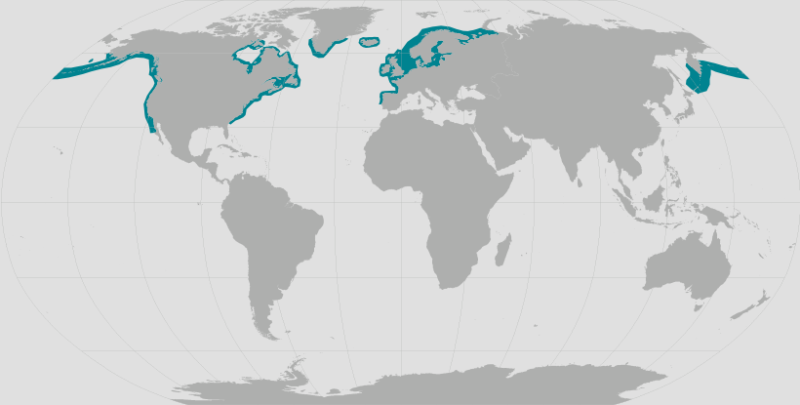
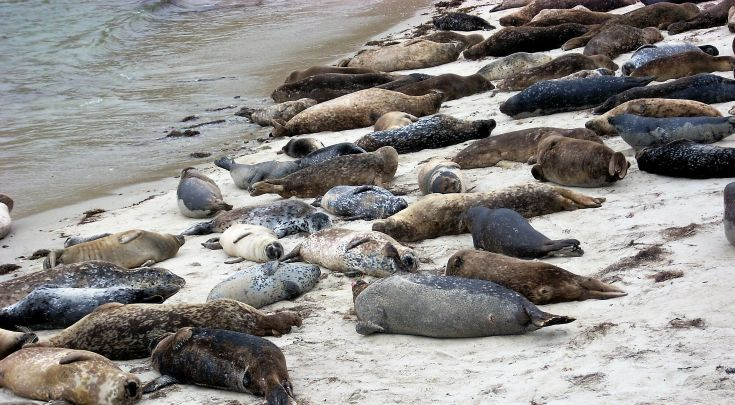

Description
The Harbor Seal is a marine mammal belonging to the family Phocidae, commonly known as the “true seals.” It has one of the widest distributions of any seal species and lives along temperate, subarctic, and Arctic coastlines of the North Atlantic and North Pacific Oceans. In North America, harbor seals range from the Arctic and Alaska southward along the Pacific coast to California, while other populations occur from Greenland and Hudson Bay southward along the Atlantic coast to the Carolinas. [1][2]
Harbor seals are well adapted to life both in the water and on land. Their streamlined bodies, powerful hind flippers, and thick layer of insulating blubber allow them to spend long periods in cold water. Unlike sea lions, harbor seals lack external ear flaps, and their hind flippers cannot rotate underneath the body. They move awkwardly on land but are agile and efficient swimmers. [1][2]
Adults have a variety of coat patterns. Some individuals are light with dark spots, while others are much darker with lighter rings or spots. This variation provides a level of camouflage in the rocky and sandy environments where the seals rest. Their whiskers, or vibrissae, are particularly sensitive and can help them detect movements and vibrations produced by prey in the water. [2]
Global Demographics & Habitat

